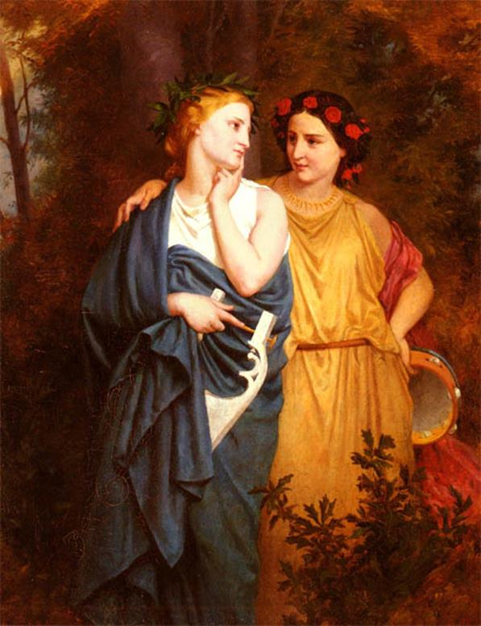
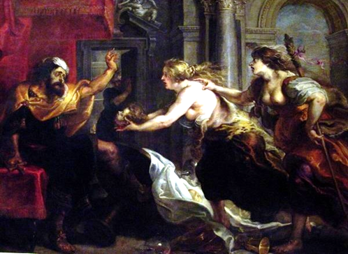

Pandion nhà vua trị vì ở đô thành Athènes dòng dõi của Érichthonios, đang lâm vào một tình cảnh nguy khốn.

Vừa mới được truyền ngôi chưa được bao lâu, Pandion đã phải chống chọi lại với lũ giặc cỏ ở các nước láng giềng. Giặc thì ở bốn phía đánh vào mà quân trong nước thì chẳng đủ nhiều để ngăn chặn giặc. May thay vua xứ Thrace tên gọi là Térée đem quân đến ứng cứu. Nhờ đó, Pandion quét sạch lũ giặc khỏi vùng đồng bằng Attique thân yêu. Để bày tỏ tấm lòng biết ơn đối với Térée, Pandion gả nàng Procné, người con gái xinh đẹp và yêu quý của mình cho người dũng tướng hào hiệp đó. Hai vợ chồng cảm tạ vua cha rồi lên đường trở về Thrace. Họ sống với nhau hạnh phúc, hòa thuận. Một năm sau họ báo tin mừng cho vua cha biết họ đã sinh được một cậu con trai, mặt mũi khôi ngô xinh đẹp.
Năm năm sau, một hôm Procné bảo chồng:
- Chàng ơi! Em xa cha mẹ và các em đã lâu rồi mà chưa về thăm lại được. Em muốn chàng cho phép em được trở về thăm lại quê nhà. Nếu như chàng e ngại đường sá xa xôi, núi sông cách trở không muốn để em với con đi thì chàng về thăm vua cha thay em vậy. Nhưng khi về nhất thiết chàng phải đón được cô Philomèle về đây chơi với em. Ai lại chị em ruột thịt mà lâu ngày quá chẳng được gặp mặt nhau để nói đôi ba câu chuyện. Chẳng rõ dạo này cô ấy đã có đám nào chưa? - Procné ngừng một lát thở dài. - Cứ thế này không khéo chỉ độ dăm năm nữa chị em gặp nhau là chẳng nhận được ra nhau nữa đâu. Người ruột thịt máu mủ mà hóa thành người dưng nước lã. Térée, chàng hỡi! Thế nào chàng cũng xin phép vua cha cho cô ấy về đây chơi với em ít ngày nhé! Chàng phải hứa với em làm bằng được việc đó đi!
Térée hứa sẽ thực hiện bằng được điều mong muốn của vợ. Chàng sai gia nhân sắm sửa hành lý, thuyền bè để ra đi ngay. Thuận buồm xuôi gió, không bao lâu Térée đã tới Athènes. Vua cha vô cùng mừng rỡ. Được tin anh rể về thăm, Philomèle vội đến chào. Térée ngạc nhiên trước vẻ đẹp kỳ lạ của cô em vợ. Chàng tự nói với mình: trời ơi, sao cô ấy lại lớn nhanh và đẹp đến như thế nhỉ. Đẹp kỳ lạ như thế nhỉ. Mà sao dạo ấy mình không gặp và không biết? Đúng là một ngôi sao, một ngôi sao cứ ngời ngợi tỏa sáng; một nữ thần, kể cũng không ngoa. Những ngày thăm viếng đã hết hạn kỳ của nó. Térée thực hiện lời dặn của vợ, xin phép vua cha cho Philomèle cùng được trở về Thrace với mình để thăm người chị ruột bấy lâu hằng mong nhớ cô em, thiết tha mong có dịp hai chị em gặp nhau để tâm tình trò chuyện. Vua cha ưng thuận song không quên nhắc đi nhắc lại chuyện Térée phải trông nom cô em gái cho chu đáo cẩn thận:
- Ta rất vui mừng và sung sướng khi nghĩ đến hai chị em nó được gặp lại nhau cho thỏa lòng thương nhớ. Nhưng ta cũng sẽ rất buồn nếu con để em nó đi lâu quá. Pandion nói với Térée như vậy. Bởi vì con biết đấy, ở nhà quanh quẩn chỉ có nó với ta. Nó là niềm vui, nỗi an ủi và người đỡ đần ta trong lúc tuổi già. Con nhớ trông nom em, bảo vệ em trong quãng đường dài đầy gian nguy bất trắc.
Pandion cũng không quên dặn dò cô con gái út những điều tương tự. Nhà vua tiễn con với một linh cảm bất an trong lòng.
Con thuyền đưa Térée trở về quê hương Thrace thuận buồm xuôi gió. Chẳng bao lâu đất Thrace đã hiện ra với dải bờ biển có những bãi cát trắng dài. Xa xa là triền núi xanh trùng điệp. Thuyền cập bến. Nhưng Térée không đưa cô em vợ về cung điện, mà lại đưa cô vào một khu rừng. Từ khi tiếp xúc với Philomèle, trái tim Térée bùng cháy lên một dục vọng đen tối. Hắn say mê sắc đẹp của Philomèle đến mất tỉnh táo. Trái tim hắn chỉ nghĩ đến việc cưỡng bức chiếm đoạt thể xác người thiếu nữ tuyệt diệu này. Khi còn ở trên thuyền thì lúc nào hắn cũng quanh quẩn ở bên cô, tán tỉnh, thăm dò, còn bây giờ thì hắn dùng vũ lực. Hắn đưa Philomèle vào trong rừng sâu chưa có mấy ai đặt chân tới. Tìm được một căn lều của một người đi rừng nào đó dựng tạm, hắn giam Philomèle vào đó và cưỡng bức Philomèle phải hiến thân. Mặc cho Philomèle van xin, cầu khấn các vị thần che chở, hắn vẫn chẳng hề xúc động. Cùng đường, Philomèle nguyền rủa hắn.
- Hỡi tên Térée khốn kiếp! Mi là một kẻ lòng lang dạ thú, ăn cháo đái bát. Mi không còn một chút lương tâm trong ngươi. Cha ta đối đãi với mi nồng hậu và tin cẩn mà mi nỡ lòng nào. Chị ta có ngờ đâu đến nông nỗi này: mi trở thành một kẻ dối trá phản trắc. Được, mi cưỡng bức ta, cướp đoạt cuộc đời ta thì sẽ đến ngày mi phải đền tội. Hỡi thần thánh thiêng liêng, xin các thần chứng giám cho con, một kẻ bạo ngược đã hành động trái với truyền thống quý người, trọng khách như thế này? Xin các vị hãy trừng phạt tên vua Térée là kẻ đã làm ô uế một sợi dây thiêng liêng huyết thống. Hỡi rừng thiêng nước độc, các người hãy nghe những lời than khóc của ta và truyền lại cho những ai chưa biết! Các người hãy kể lại cho mọi người rõ hành động đê tiện bỉ ổi này của Térée.
Térée rất căm tức, căm tức đến điên người trước thái độ phản kháng quyết liệt, chống chọi đến cùng của Philomèle. Sau khi thỏa mãn dục vọng điên cuồng của mình, hắn trói Philomèle lại rồi cắt lưỡi để cho nàng không thể kể với ai, nói cho ai biết hành động xấu xa của hắn. Thế rồi hắn bỏ mặc Philomèle trong rừng để trở về cung điện.
Nàng Procné ngày đêm trông ngóng chồng và cô em gái, nay thấy chồng về thì vô cùng mừng rỡ. Nhưng khi không thấy Philomèle về cùng thì nàng vô cùng ngạc nhiên, vặn hỏi. Térée, lạnh lùng và một lần nữa lừa dối, trả lời:
- Cô ta chẳng may gặp phải một căn bệnh hiểm nghèo đã qua đời trước khi ta đặt chân tới Attique!
Procné tối sầm cả mặt mày, ngất đi trước cái tin sét đánh đó. Tỉnh dậy nàng lại than khóc, xót thương cho số phận bất hạnh của em. Càng nghĩ lại những kỷ niệm xưa trong thời thơ ấu, hai chị em gần gụi, chung sống trong gia đình, nàng lại càng xót xa đau đớn.
Còn Philomèle, số phận nàng ra sao trong khu rừng già sâu thẳm, vắng vẻ? Nàng vẫn sống. Nàng may sao được gia đình một người tiều phu nghèo, giàu lòng nhân ái đón được, nuôi nấng, chăm sóc. Qua gia đình này, nàng biết được kinh thành này không xa lắm, và Procné, người chị ruột thân yêu của nàng vẫn sống chứ không phải qua đời như Térée bịa ra nói với nàng khi thuyền cập bến. Philomèle tìm cách báo tin cho chị biết. Nàng suy nghĩ lao lung. Nhắn tin thì không được rồi. Còn lần tìm đường vào cung điện thì là một việc vô cùng mạo hiểm. Mà dẫu có vào được thì làm sao mà hai chị em gặp nhau được, làm sao mà nói chuyện với nhau được. Chỉ có cách dùng một tín hiệu gì, ám hiệu gì đưa đến cho Procné để Procné có thể hiểu hết được tình cảm của mình và tìm cách cứu. Nhưng tín hiệu gì, ám hiệu gì, như thế nào mới được chứ? Thật khó quá. Sau nhiều đêm ngày suy nghĩ lao lung, cuối cùng Philomèle nghĩ ra được một cách mà nàng cho rằng không thể còn cách gì hay hơn, tốt hơn: nàng sẽ thêu lên một tấm khăn những điều nàng muốn nói với chị. Chị nàng, qua những hình ảnh nàng thêu, sẽ đoán biết được sự thật. Nghĩ thế rồi Philomèle bắt tay vào việc. Chiếc khăn thêu xong, Philomèle tìm cách gửi vào cung điện, gửi đến tận tay Procné.
Nhận được tấm khăn, xem những hình ảnh thêu trên tấm khăn, nhận ra những đường kim mũi chỉ quen thuộc, Procné phải cắn chặt răng lại cho những hàng nước mắt khỏi trào ra. Nàng bồn chồn, day dứt, đi lang thang trong cung điện như một người mất hồn. Nàng suy nghĩ cách trả thù tên chồng khốn kiếp đã can tội xúc phạm đến cha nàng, em nàng. Thời gian đó đúng vào dịp những người phụ nữ Thrace tổ chức lễ rước mừng thần Dionysos. Nàng bèn tham gia vào đoàn người hành lễ: rước đuốc vào rừng khuya. Nhờ đó, nàng tìm thấy Philomèle. Nàng bí mật đưa cô em về giấu kín trong cung điện, ở đây hai chị em suy tính đòn trừng phạt để trả thù. Procné khuyên Philomèle không nên đau buồn, than khóc. Nàng bảo:
- Philomèle em hỡi! Những giọt nước mắt của hai chị em ta phỏng có ích gì. Chúng ta phải lấy ân trả ân, lấy oán trả oán. Chị sẵn sàng vì danh dự của gia đình ta, của cha chúng ta và của em mà nhúng tay vào máu.
Procné vừa nói xong thì đứa con trai lớn của nàng đi vào. Tên nó là Itys. Trông thấy con, Procné bảo:
- Em kìa, trông thằng Itys nó giống bố nó như đúc. Rồi ra nó cũng đến đểu cáng, lá mặt lá trái như bố nó thôi!
Một mưu toan vô vùng man rợ lóe lên trong trái tim nàng. Nàng cố xua đuổi đi nhưng những ý nghĩ căm thù và uất ức giữ nó lại. Nàng gọi con, dắt nó vào buồng ngủ rồi bất chợt rút thanh gươm sắc nhọn treo trên tường ra thọc mạnh vào ngực đứa bé. Máu ộc ra, đứa bé chỉ kịp kêu lên mấy tiếng “Mẹ! Mẹ!” rồi không còn hơi sức nữa. Hai chị em Procné đem chặt đứa bé thành từng phần. Họ làm một bữa ăn thịnh soạn để dâng mời Térée. Những miếng thịt nạc ngon lành họ lọc ra xiên vào que nướng chả. Những miếng khác thì hầm nấu cháo...
Chiều hôm đó như thường lệ, Térée ăn uống ngon lành bên người vợ hiền phục vụ cho chàng. Đang ăn, Térée sực nhớ tới đứa con trai, bèn hỏi:
- Này, thằng Itys đi đâu mà không thấy nó về ăn?
Procné lạnh lùng trả lời:
- Nó ở ngay trước mặt đấy chứ còn đi đâu nữa!

Térée tưởng vợ nói đùa. Hắn không hiểu ý câu nói đó. Hắn đòi vợ phải cho nguời đi tìm ngay đứa con về. Khi đó Philomèle từ sau rèm bước ra. Nàng mở bọc đấy cái đầu máu me của Itys quăng vào mặt Térée. Térée giật bắn người lên. Hắn không còn hồn vía nào nữa. Hắn đứng lặng người đi giương đôi mắt lên nhìn vợ, nhìn cô em vợ mà hắn đã cắt lưỡi, nhìn xuống bàn ăn và cái đầu của đứa con trai yêu quý. Thế rồi bỗng hắn hét lên một tiếng man rợ lao vào phòng lấy thanh gươm ra quyết trừng trị hai chị em để trả mối thù cho đứa con trai. Nhưng hai chị em đã kịp thời chạy trốn. Hắn đuổi theo. Hai chị em cầu xin các vị thần bảo hộ. Thần Zeus bèn biến Procné thành con chim họa mi. Tiếng hót của chim nức nở, xót xa như lời than khóc hối hận, nức nở, xót xa của người mẹ đã phạm tội giết con. Philomèle thì biến thành con chim én. Tiếng kêu tắc sát, lùng bùng của nó như tiếng nói của nàng Philomèle bị cắt lưỡi, không nói được lên tiếng lên lời. Cổ chim én có một vệt đỏ. Đó là vết máu của Itys giây vào tấm áo. Còn Térée thì biến thành con chim đầu rìu. Mào của chim giống hệt như chiếc mũ có ngù của những tướng lĩnh người Thrace. Có chuyện kể: Philomèle biến thành chim họa mi, Procné chim én hoặc chim sẻ, Térée đại bàng.